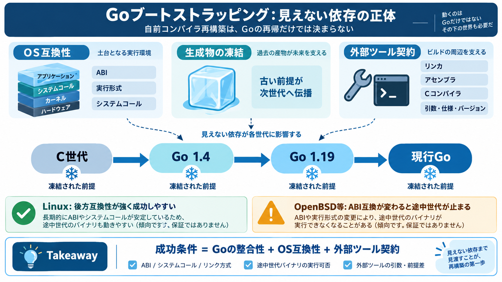

extending Go forward compatibility · golang/go · Discussion #55092 · GitHub
somewhere appropriate (perhaps the module cache) and restoring the execute bits on the binaries Could there be a mismat…

GoのツールチェーンはGoで書かれているため、理屈上は「古い世代の自前ビルド」から現在へ到達できます。 しかし実際には、その途中にあるバイナリと外部ツールが“自分の環境”で動くかが別問題になります。
ブートストラップで生成されるGoコンパイラは、その世代のOS周辺の前提（ABI、システムコール呼び方など）を引き継ぎます。 次の世代の生成でも、その前提がまた“凍結”として残ります。
Goの場合、初期ツールチェーンがCで書かれていたため、C世代 → Go世代 → 現行Goという理論上の段階的構築ルートがあります。 さらにドキュメントには「どのGoがどの条件でビルドできるか」の対応表があります。
例えばGo 1.4で作った新しいバイナリが現代OSで動いても、Go 1.4を使ってGo 1.19を作ると、 1.19が参照する前提が1.4時点の互換性に影響されます。
Linuxは強い後方互換性のおかげで成功しやすい一方、OpenBSDのようにABI互換を強く保証しない環境では、 途中世代のバイナリが動かず計画が崩れる可能性があります。
コンパイラ同士の整合性だけを見ても不十分です。起点コンパイラが使うABIや呼び出し規約が、 その後のツール生成全体へ波及し、実行できるかを左右します。
Goはリンカ・アセンブラ・Cコンパイラなどの外部プログラムを呼ぶ場面があります。 長期に同じ仕様が維持されないと、古いツールが期待する“コマンドラインの契約”と食い違って失敗します。
「過去を完全再現」して現代環境で成立させるほど、更新・調整（補正）が必要になります。 著者の言及は、現代OS・ツール群で成立させるには現実的な手当が発生しうることを示唆します。
Linux中心の成功体験は理解の助けになりますが、対象GoのC依存度や外部ツールの揃え方（クロス含む）で結論は変わり得ます。 この文章は設計上の注意喚起として読むのが安全です。
成功は「Goの再帰」だけで決まらず、OS互換性（ABI/実行形式）と外部ツール契約（引数・仕様）の連鎖で決まります。 隠れた依存を最初から織り込むと、詰まりどころを早く絞れます。
somewhere appropriate (perhaps the module cache) and restoring the execute bits on the binaries Could there be a mismat…
GOEXE The executable file name suffix (".exe" on Windows, "" on other systems). GOGCCFLAGS A space-separated list of arg…
Write 342 reads # Go 1.21: An Inside Look at Forward Compatibility and Toolchain Management by [![Go [Technical Docu…
On arm64, an out of date (lower than version 2.33) ld.gold may cause shared library tests to fail (see issue 28334). ##…
x86 and Arm are two of the five architectures I test software on. I was worried that Go might not support the other ones…